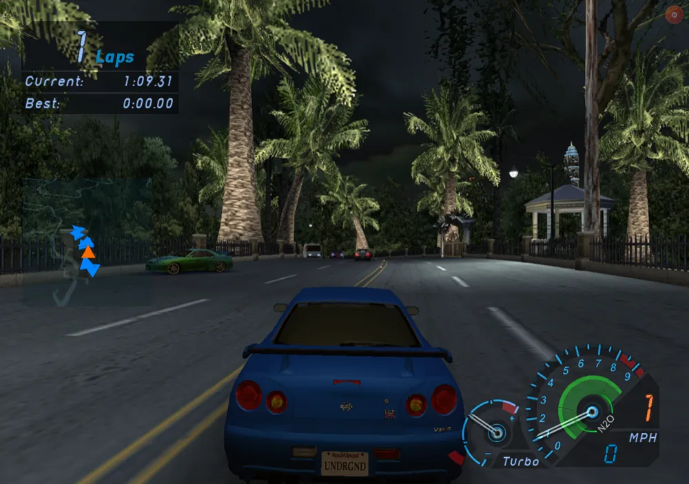

World mode: Olympic City and Bayview in one open map
The first Underground never let you leave the race track. World mode does: it turns Olympic City into free roam and connects it by one road to Bayview, the city of Underground 2.

Two cities, one road
Olympic City is the setting of Need for Speed Underground (2003). Bayview is the open city of Underground 2 (2004), with its districts, highways and airport. In World mode both sit on the same map, and a bridge road takes you from one to the other without a loading screen.
Only the city itself comes from Underground 2: streets, buildings, textures, collision and the road network. The sky, the fog, the wet night look, the cars, the physics and the HUD are still Underground 1, so Bayview feels like a new part of the same game.
What you can do
- Drive anywhere. There is no timer and no walls: every district of Bayview and every street of Olympic City is open, with traffic on the roads.
- Use any car. All cars, parts and visual upgrades are available from the start and cost nothing.
- Challenge a rival. Drive up to another racer to start a sprint to a point somewhere in either city.
- Run events. Circuit, sprint, drag and drift races have starting points spread over both cities.
The map and the GPS
Press M to open a full-screen map of both cities while the game keeps running. Click a street to mark a destination: the page traces a route along the real roads and shows it on the HUD minimap until you arrive or clear it. The map can also move your car straight to a point, which helps when the other city is far away.

How to enter
In the launcher, leave Game on World and press Play. The game's own main menu has a World entry too. World works in both versions, Original 2003 and Remaster; outside World, the Original version stays exactly as the game shipped.
The amount of traffic is an option of the launcher (Gameplay group): none, a little, normal or a lot.
What it needs
World is for computers. The two cities together are much heavier than a race track, about 380 MB that arrive as you drive, so phones and tablets start in the regular game without it. See browsers, phones and performance for the details, and how it works for the way Bayview was brought in.